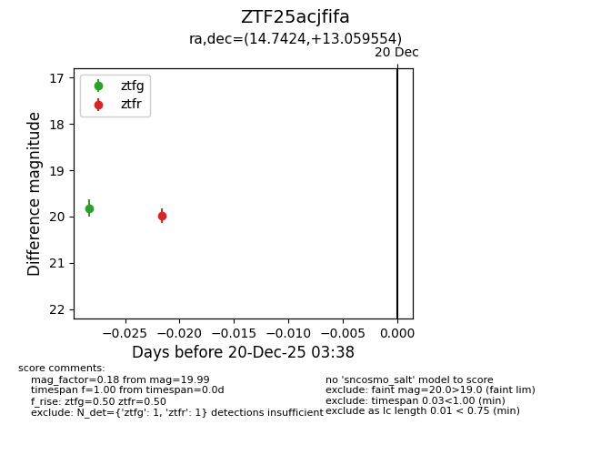
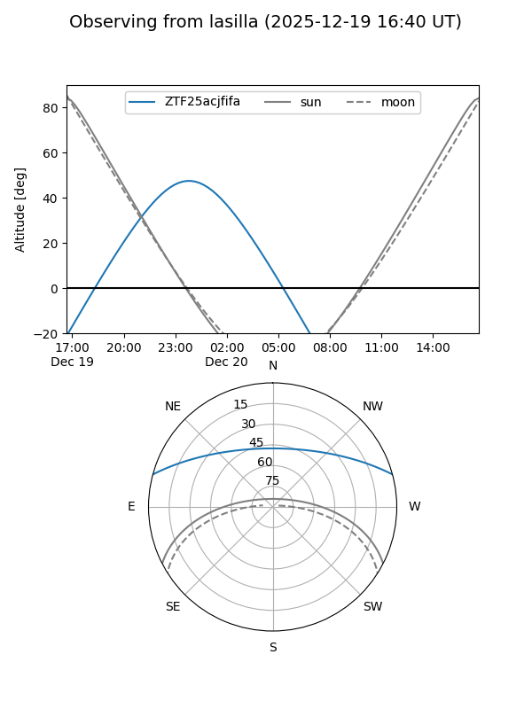
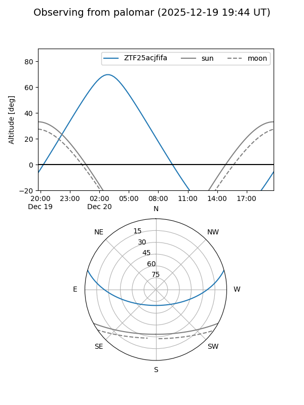

ZTF25acjfifa
Target ZTF25acjfifa at 2025-12-20 03:39
Aliases and brokers:
FINK: fink-portal.org/ZTF25acjfifa
Lasair: lasair-ztf.lsst.ac.uk/objects/ZTF25acjfifa
ALeRCE: alerce.online/object/ZTF25acjfifa
alt names
ZTF25acjfifa (ztf,fink_ztf)
Coordinates:
equatorial (ra, dec) = 14.7424,+13.05955
equatorial (HMS+DMS) = 00:58:58.18,+13:03:34.39
galactic (l, b) = (125.7726,-49.77065)
Flags:
Photometry:
last ztfg=19.82, ztfr=19.99
1 ztfg, 1 ztfr detections
Lightcurve

Visibility


Additional plots